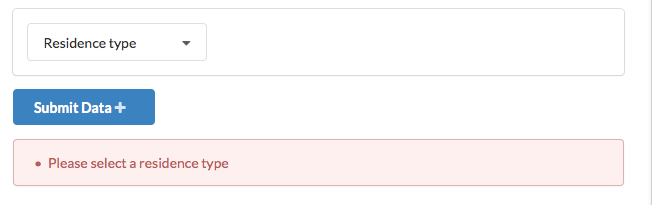
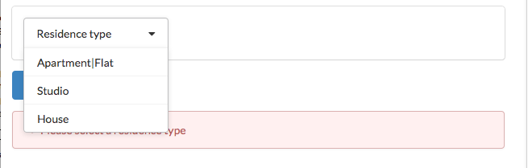
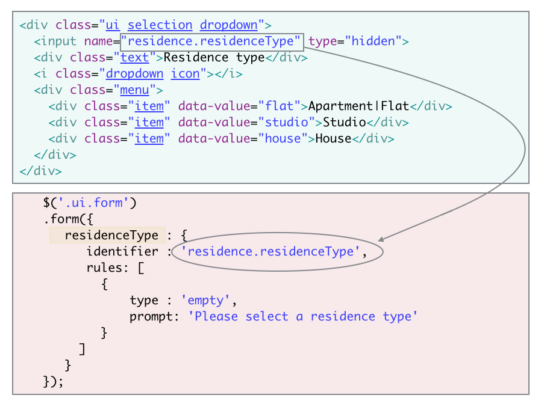
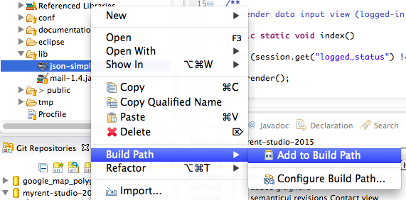
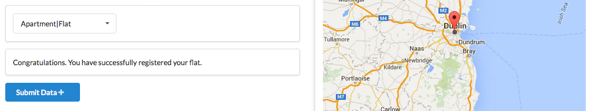

Step-by-step guide to building MyRent application
Preloaded data is extremely helpful during development as continuously initialising databases with data is both tedious and inefficient.
To preload data we place a class Bootstrap in the default folder and source the data from a file data.yml which we place in the conf directory.
Filename: Bootstrap.java
import java.util.List;
import play.*;
import play.jobs.*;
import play.test.*;
import models.*;
@OnApplicationStart
public class Bootstrap extends Job
{
public void doJob()
{
if (User.count() == 0)
{
Fixtures.loadModels("data.yml");
}
}
}Create a file data.yml in conf directory.
Filename: data.yml
User(homer):
firstName: Homer
lastName: Simpson
email: homer@simpson.com
password: secret
User(marge):
firstName: Marge
lastName: Simpson
email: marge@simpson.com
password: secretHere is the Residence model file.
Filename: Residence.java
package models;
import java.util.Date;
import javax.persistence.Entity;
import javax.persistence.ManyToOne;
import play.db.jpa.Model;
@Entity
public class Residence extends Model
{
@ManyToOne
public User user;
// residence location in latitude longitude
// example: "52.253456, -7.18716"
public String geolocation;
// date residence registered
public Date dateRegistered;
// rented == 'yes' represents residence rented,
// rented == 'no' represents building vacant
public String rented;
// rent per calendar month
public int rent;
public int numberBedrooms;
// Apartment | Flat, Studio or House
public String residenceType;
public void addUser(User user)
{
this.user = user;
this.save();
}
}This is the script for inputdata.js. Place it in main.html.
<script src="@{'/public/javascripts/inputdata.js'}" charset="${_response_encoding}"></script>For reference, here is the refactored main.html:
<html>
<head>
<title>#{get 'title' /}</title>
<meta charset="${_response_encoding}">
<link rel="stylesheet" type="text/css" href="http://cdnjs.cloudflare.com/ajax/libs/semantic-ui/2.1.8/semantic.min.css">
<link rel="shortcut icon" type="image/png" href="@{'/public/images/favicon.png'}">
</head>
<body>
#{doLayout /}
<!-- <script src="http://code.jquery.com/jquery-2.2.3.min.js"></script> -->
<script src="@{'/public/javascripts/jquery-2.2.3.js'}" type="text/javascript" charset="${_response_encoding}"></script>
<script src="http://cdnjs.cloudflare.com/ajax/libs/semantic-ui/2.1.8/semantic.min.js"></script>
<script src="@{'/public/javascripts/inputdata.js'}" charset="${_response_encoding}"></script>
#{get 'moreScripts' /}
</body>
</html>And here is the file for InputData view:
Filename: index.html
#{extends 'main.html' /}
#{set title:'Input' /}
<nav class="ui menu">
<a class="ui item" href="/">Welcome</a>
<a class="ui item" href="/account">Sign Up</a>
<a class="ui item" href="/login">Log In</a>
<a class="ui active item" href="/inputdata">Input data</a>
</nav>
<section class="ui segment">
<form class="ui form" action="/inputdata/datacapture" method="POST">
<p>Please input residence data</p>
<div class="ui two column grid">
<div class="column">
<div class="ui fluid form segment">
<label>Location </label>
<!-- <input type="text" id="geolocation" name="residence.geolocation" value="53.347298,-6.268344" readonly class="input-medium"> -->
<div class="ui input">
<input id = "geolocation" value="53.347298,-6.268344" name="residence.geolocation" type="text" readonly>
</div>
</div>
<!-- Residence rented or vacant? -->
<div class="ui fluid form segment">
<!-- Rented or vacant? -->
<div class="grouped inline fields">
<div class="ui radio checkbox">
<input name="residence.rented" checked="checked" type="radio" value="yes">
<label>Rented</label>
</div>
<div class="ui radio checkbox">
<input name="residence.rented" type="radio" value="no">
<label>Vacant</label>
</div>
</div>
</div>
<!-- The monthly rent -->
<div class="ui two column grid">
<div class="column">
<div class="ui form segment">
<!-- <label class="control-label"> Rent per calendar month(€): </label> -->
<div class="ui fluid labeled input">
<div class="ui label">
Monthly rent (€)
</div>
<input value="1500" name="residence.rent" type="text">
</div>
</div>
</div>
<!-- The number of bedrooms -->
<div class="column">
<div class="ui form segment">
<!-- <label class="control-label"> Rent per calendar month(€): </label> -->
<div class="ui fluid labeled input">
<div class="ui label">
Number bedrooms:
</div>
<input value="3" name="residence.numberBedrooms" type="text" size=1em>
</div>
</div>
</div>
</div>
<!-- The residence type -->
<div class="ui fluid form segment">
<div class="ui selection dropdown">
<input name="residence.residenceType" type="hidden">
<div class="text">Residence type</div>
<i class="dropdown icon"></i>
<div class="menu">
<div class="item" data-value="flat">Apartment|Flat</div>
<div class="item" data-value="studio">Studio</div>
<div class="item" data-value="house">House</div>
</div>
</div>
</div>
<!-- Submit form button -->
<div class="form-actions">
<div class="ui blue submit button">Submit Data <i class="add icon"></i></div>
<div class="ui error message"></div>
</div>
</div>
<!-- close 1st column -->
<!-- The map representing residence location -->
<div class="column">
<div class="ui raised fluid form segment">
<div id="map_canvas"></div>
<script src="https://maps.googleapis.com/maps/api/js?v=3.exp&sensor=false"></script>
<script src="@{'/public/javascripts/map.js'}" charset="${_response_encoding}"></script>
</div>
</div>
<!-- close 2nd column -->
</div>
<!-- class ui two column grid -->
</form>
</section>Here we describe how to initialize and validate the SemanticUI radio button and drop-down controls.
Place this file in public/javascripts folder:
Filename: inputdata.js
// initialize the controls in the input data template and validate residence type
$('.ui.dropdown').dropdown();
$('.ui.checkbox').checkbox();
$('.ui.form')
.form({
residenceType : {
identifier : 'residence.residenceType',
rules: [
{
type : 'empty',
prompt: 'Please select a residence type'
}
]
}
});This line initializes the drop-down box where the residence type is selected:
$('.ui.dropdown').dropdown();The radio button group which allows a user to indicate whether the residence is rented or vacant is initialized with this script:
$('.ui.checkbox').checkbox();These scripts could have been placed at the end of the html (template).
The final script validates the drop-down input.
  
Observe how the validation is activated using class = ui error message:
<!-- Submit form button -->
<div class="form-actions">
<div class="ui blue submit button">Submit Data <i class="add icon"></i></div>
<div class="ui error message"></div>
</div>The following code, located towards the end of InputData.index.html, loads the inputdata.js script:
<script src="@{'/public/javascripts/inputdata.js'}" type="text/javascript" charset="${_response_encoding}"></script>Here it the InputData controller code:
Filename: InputData.java
package controllers;
import java.util.Date;
import models.Residence;
import models.User;
import play.Logger;
import play.mvc.Controller;
public class InputData extends Controller
{
/**
* Render data input view (logged-in users only).
*/
public static void index()
{
if (session.get("logged_status").equals("logged_in"))
{
render();
}
else
{
Accounts.login();
}
}
/**
* Update models with residential data
*/
public static void dataCapture(Residence residence)
{
User user = Accounts.getCurrentUser();
residence.addUser(user);
residence.dateRegistered = new Date();
residence.save();
Logger.info("Residence data received and saved");
Logger.info("Residence type: " + residence.residenceType);
Logger.info("Rented? " + residence.rented);
index();
}
}We are now in a position to answer a question that may have occured to you when studying the files InputData.index and the model Residence.java.
name="residence.county"Finally, update the routing:
#Input Data
GET /inputdata InputData.index
POST /inputdata/datacapture InputData.dataCaptureIf you launch myrent and immediately attempt access InputData before logging in you may encounter an exception, the infamous NullPointerException. (Example: localhost:9000/inputdata)
if (session.get("logged_status").equals("logged_in"))with this line:
if (session.get("logged_status") != null && session.get("logged_status").equals("logged_in"))In the next step we shall implement the method Accounts.getCurrentUser() that is invoked in dataCapture above.
We wish that when a user logs in and successfully authenticates, it is automatically routed to the InputData view.
InputData.index();in Accounts.authenticate.
Here is the refactored Accounts.authenticate method:
/**
* Authenticates that a user's login credentials are valid
*
* @param email
* The submitted email address
* @param password
* The corresponding password
*/
public static void authenticate(String email, String password)
{
User user = User.findByEmail(email);
if ((user != null) && (user.checkPassword(password) == true))
{
Logger.info("Authentication successful");
session.put("logged_in_userid", user.id);
session.put("logged_status", "logged_in");
InputData.index();
}
else
{
Logger.info("Authentication failed");
login();
}
}Notice that in the method authenticate we now also introduce the Play session to track key information such as the logged-in user id and so on:
session.put("logged_in_userid", user.id);
session.put("logged_status", "logged_in");A method getCurrentUser is invoked in the method dataCapture in the InputData controller.
Here is its implementation. Add this to the Accounts contoller.
public static User getCurrentUser()
{
User user = null;
if (session.contains("logged_in_userid"))
{
String userId = session.get("logged_in_userid");
user = User.findById(Long.parseLong(userId));
}
return user;
}The location of a particular residence is determined using a GoogleMap.
Filename: map.js
function initialize() {
let map;
let marker;
const latlng = new google.maps.LatLng(53.347298, -6.268344);
const mapOptions = {
zoom: 8,
center: new google.maps.LatLng(53.347298, -6.268344),
mapTypeId: google.maps.MapTypeId.ROADMAP,
};
const mapDiv = document.getElementById('map_canvas');
map = new google.maps.Map(mapDiv, mapOptions);
mapDiv.style.width = '500px';
mapDiv.style.height = '600px';
// place a marker
marker = new google.maps.Marker({
map: map,
draggable: true,
position: latlng,
title: 'Drag and drop on your property!',
});
// To add the marker to the map, call setMap();
marker.setMap(map);
// marker listener populates hidden fields ondragend
google.maps.event.addListener(marker, 'dragend', function () {
const latLng = marker.getPosition();
const latlong = latLng.lat().toString().substring(0, 10) + ','
+ latLng.lng().toString().substring(0, 10);
// publish lat long in geolocation control in html page
$('#geolocation').val(latlong);
// update the new marker position
map.setCenter(latLng);
});
}
google.maps.event.addDomListener(window, 'load', initialize);Notice the statement
var mapDiv = document.getElementById('map_canvas');in map.js. Notice also in InputData.index.html the statement
<div id="map_canvas"></div>The id 'map_canvas' is common to both statements.
Note that a JavaScript library JQuery is required, for example in the method invocation:
A script call to JQuery has already been autogenerated by Play and can be found in views/main.html.
<script src="@{'/public/javascripts/jquery-2.2.3.js'}" charset="${_response_encoding}"></script>This statement captures the latitude and longitude of the marker at the conclusion of dragging and renders it using JQuery to the html element whose id is "geolocation".
$("#geolocation").val(latlong);Reference: JavaScript - The Definitive Guide by David Flanagan is availabe in pdf here.
It is necessary to modify the navigation bar to allow access to the new InputData view (template) in this iteration.
Here is the refactored code as it appears in views/InputData/index.html:
<nav class="ui menu">
<a class="ui item" href="/">Welcome</a>
<a class="ui item" href="/account">Sign Up</a>
<a class="ui item" href="/login">Log In</a>
<a class="ui active item" href="/inputdata">Input data</a>
</nav>Add this line to the navigation bar code in the remaining templates such as:
<a class="ui item" href="/inputdata">Input data</a>Run MyRent app, log in and switch to the inputdata view.
Select a data set and press the Submit Data button.
Notice how the page refreshes, in particular that the map appears to flash briefly.
We shall address this problem by using a pattern referred to as Ajax.
Modifications are required to the following files:
Filename: InputData.java
Comment out the call to index() in dataCapture and replace with:
JSONObject obj = new JSONObject();
String value = "Congratulations. You have successfully registered your " + residence.residenceType +".";
obj.put("inputdata", value);
renderJSON(obj);This code requires the following import:
import org.json.simple.JSONObject;Also required is the file json-simple-1.1.jar available here.
.
Filename: InputData/index.html
Replace this:
<form class="ui form" action="/inputdata/datacapture" method="POST">with this:
<form class="ui form">Add this div immediately before the Submit form button code:
<div class="ui fluid form segment">
<div id="notification"></div>
</div>We shall use this to post a notification message on successful return from the Ajax call.
Filename: inputdata.js
This block of code is to be added to the end of the validation method:
onSuccess : function() {
submitForm();
return false;
}If the validation succeeds the function submitForm is invoked.
Here is the modified validation folllowed by submitForm:
// Refactored for Ajax call. See lab solution v1 step 09
$( document ).ready(function() {
// initialize the controls in the input data template and validate residence type
$('.ui.dropdown').dropdown();
$('.ui.checkbox').checkbox();
$('.ui.form')
.form({
residenceType : {
identifier : 'residence.residenceType',
rules: [{
type : 'empty',
prompt: 'Please select a residence type'
}]
}
},
{
onSuccess : function() {
submitForm();
return false;
}
});
function submitForm() {
var formData = $('.ui.form.segment input').serialize();
$.ajax({
type: 'POST',
url: '/inputdata/datacapture',
data: formData,
success: function(response) {
console.log("notification: " + response.inputdata);
$('#notification').html(response.inputdata);
}
});
}
});Once you have performed the above refactoring, the data input screen will remain flicker-free when the Submit Data button is pressed. Also, a notification will be written to the notification div, for example as shown in Figure 2.

Commit this iteration to your myrent repository, add a tag and push all to remote repo.
git add .
git commit -m 'iteration v1'
git tag -a v1 -m 'iteration v1'
git push && git push --tags